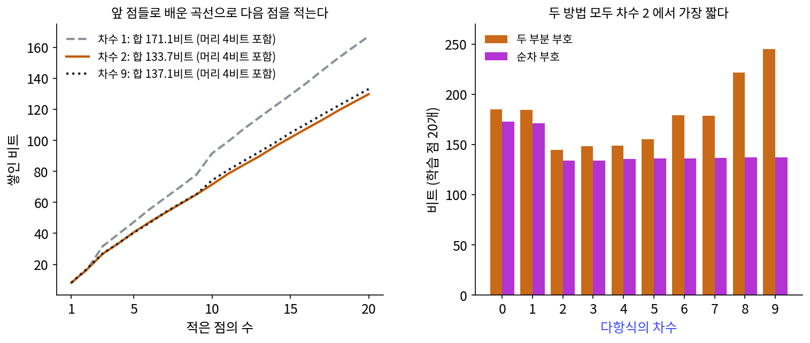
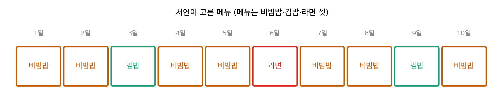
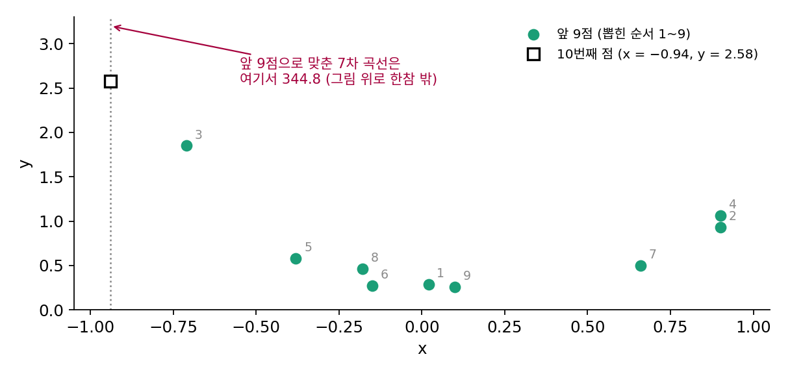
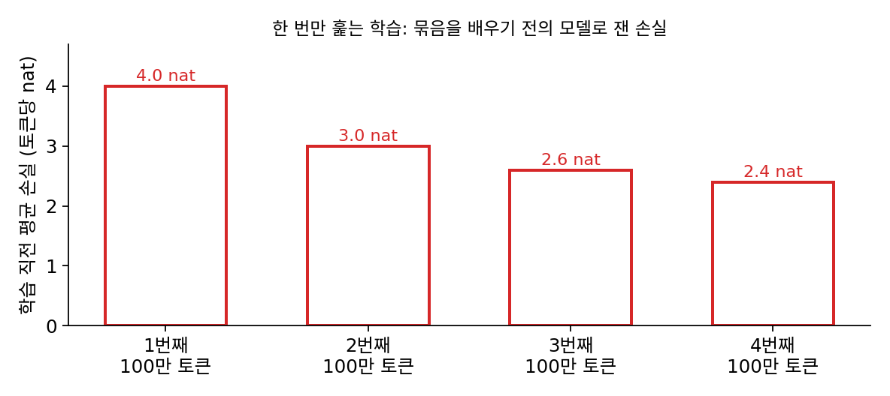

순차 코드: 배우면서 적으면 모델을 따로 보내지 않아도 된다
두 부분 코드는 정직하지만 번거롭다. 계수를 몇 자리로 반올림할지, 정수를 어떤 코드로 적을지, 노이즈 크기는 어떤 눈금으로 보낼지를 모두 정해야 했고, 그 고름에 따라 숫자가 달라졌다. 신경망이라면 파라미터 수백만 개를 어떤 코드로 적을지부터 막막하다. 그런데 받는 사람도 계산을 할 줄 안다면, 모델을 보내지 않고 같은 학습 규칙만 약속해 둘 수는 없을까? 예측기를 산술 코딩에 넣으면 압축기가 된다는 것을 이미 보았는데, 그 예측기가 앞의 자료로 배우는 예측기라면 무엇이 달라질까?
역사: 하나씩 예보하며 평가하기
1984년 영국의 통계학자 다위드(A. Philip Dawid)는 왕립 통계 학회 150주년 호에 「통계 이론: 순차 예보의 접근」을 실었다. 그는 통계 방법을 평가할 때 모델이 얼마나 그럴듯한지 따지기보다, 그 방법을 앞의 자료로 다음 값 하나를 예보하는 예보기로 바꾸어 실제로 값을 하나씩 차례로 예보해 보자고 했다. 예측(prediction)과 순차(sequential)를 합쳐 「prequential」이라는 낱말을 지었다. 하나씩 예보하며 매긴 점수를 −log₂ 확률로 매기면 그 합은 그대로 코드 길이가 되고, 이 생각은 뒤에 최소 기술 길이의 한 가지 방법(순차 코드)으로 자리 잡았다.
다항식을 배우면서 점을 적기
학습 점 스무 개를 뽑힌 순서대로 하나씩 보낸다. 보내는 사람과 받는 사람은 미리 이런 규칙을 약속한다(계산은 sources/mdl/s5_prequential.py).
- 계수는 「평균 0, 표준편차 1」이라는 처음 짐작에서 출발한다.
- t번째 점은, 앞의 t − 1개 점으로 고친 계수 짐작의 곡선값을 평균으로 하는 정규분포로 적는다.
- 그 정규분포의 폭에는 노이즈의 짐작과 함께, 계수가 아직 덜 정해진 만큼의 퍼짐을 넣는다. 점이 적을 때는 넓게, 많아지면 좁게 예측한다.
받는 사람은 점을 하나 되살릴 때마다 같은 계산으로 계수 짐작을 고치므로, 다음 점을 적은 비트를 읽을 준비가 된다. 계수는 한 번도 보내지 않고, 보내는 것은 차수를 알리는 머리 4비트와 점마다의 비트뿐이다.

2차 다항식은 처음 세 점을 8.2, 8.5, 10.0비트로 적다가, 곡선이 잡혀 가면서 마지막 몇 점은 5.5비트 안팎으로 적었다. 합은 머리 4비트를 더해 133.7비트로 차수 0부터 9까지 가운데 가장 짧고, 9차는 137.1비트다. 두 부분 코드에서는 9차가 2차보다 100비트 길었는데, 여기서는 3.4비트 차이다. 계수의 처음 짐작이 「표준편차 1」이라 47이나 −67처럼 큰 계수를 처음부터 거의 믿지 않기 때문이다. 큰 계수를 비싸게 적던 감마 코드의 일을 처음 짐작이 대신 맡았으니, 처음 짐작을 어떻게 두느냐가 모델 비트 노릇을 하는 것이다.
이렇게 앞의 자료로 배운 예측기로 다음 자료를 적는 비트를 차례로 더한 코드를 순차 코드 (배우면서 적는 코드 / prequential code)라 한다.
순차 코드의 식은 산술 코딩에서 본 「예측기가 실제로 온 값에 준 확률의 −log₂를 더한 것」과 모양이 같다. 다른 것은 예측기가 고정되어 있지 않고 점 하나를 적을 때마다 새로 배운다는 것 하나다. 모델을 적는 비용은 어디로 갔을까? 큰 모델일수록 배우는 데 점이 많이 필요하고 그동안 서툰 예측에 비트를 치르므로, 그 비용은 처음 몇 점을 서툴게 적은 비트에 들어 있다.
ML에서: 신경망의 기술 길이를 재다
블리어(Léonard Blier)와 올리비에(Yann Ollivier)는 「딥러닝 모델의 기술 길이(The Description Length of Deep Learning Models)」(NeurIPS 2018)에서 다음 물음을 신경망에 직접 던졌다. 파라미터가 자료 점보다 많은 신경망이, 파라미터를 적는 비용까지 넣고도 학습 자료를 압축하는가? 그들은 두 가지로 재 보았다. 하나는 힌턴과 판캄프의 생각을 잇는 변분 방법, 가중치에 노이즈를 섞어 가중치의 정보량을 재는 두 부분 코드다. 다른 하나는 자료를 묶음으로 나눠, 앞 묶음들로 학습한 신경망으로 다음 묶음을 적는 순차 코드다. 그들은 변분 방법이 기술 길이를 줄이려고 만든 방법인데도 뜻밖에 압축 성능이 나빴고, 단순한 순차 코드는 깊은 신경망으로 자료를 아주 잘 압축했다고 보고했다. 파라미터가 많은 신경망도 배우면서 적으면 짧은 설명이 될 수 있다는 것이다.
자료를 한 번만 훑으며 학습하는 언어 모델이라면, 학습 기록에 찍힌 손실을 스텝마다 더한 값이 바로 순차 코드의 길이다. 각 스텝의 손실은 그때까지 배운 모델이 아직 보지 않은 다음 묶음에 매긴 비트이기 때문이다(아래 문제 15).
문제 13. 학생식당 주문 맞히기
학생식당 메뉴는 비빔밥, 김밥, 라면 셋이다. 서연이 열흘 동안 고른 메뉴는 「비빔밥, 비빔밥, 김밥, 비빔밥, 비빔밥, 라면, 비빔밥, 비빔밥, 김밥, 비빔밥」이다. 민준은 날마다 「(그 메뉴를 지금까지 고른 횟수 + 1) ÷ (지난 날 수 + 3)」의 확률로 서연의 주문을 맞힌다. (가) 열흘의 주문을 민준의 예측으로 적으면 몇 비트인가? 첫날, 셋째 날, 여섯째 날은 각각 몇 비트인가? (나) 셋을 고르게 믿고 적으면 몇 비트인가? (다) 열흘의 비율 (0.7, 0.2, 0.1)을 먼저 보내고 메뉴마다 −log₂(비율)비트로 적는 두 부분 코드와 비교하라. 횟수 (7, 2, 1)을 알리는 데는 log₂ 66 = 6.04비트가 든다.


첫날은 아무것도 몰라서 1/3, 1.58비트요. 셋째 날은 비빔밥 둘 뒤에 김밥이 와서 (0 + 1)/(2 + 3) = 1/5, 2.32비트예요. 여섯째 날 라면은 1/8이라 3비트고요. 다 더하면 14.54비트예요.

(나)는 열흘 × log₂ 3 = 15.85비트. 처음 며칠은 민준이도 고르게 믿는 것과 비슷하게 서투르지만, 비빔밥이 많다는 걸 배운 뒤로는 비빔밥을 0.8비트 안팎으로 적어.

(다)는요? 비율을 미리 알면 더 짧지 않을까요?

비율대로 적으면 11.57비트라 훨씬 짧네요. 아, 근데 비율을 보내는 6.04비트를 더해야 해요. 17.61비트예요. 배우면서 맞힌 14.54비트보다 길어요.
비율을 보내는 건 모델 비트고, 민준이의 예측은 그걸 따로 안 보내고 처음 며칠 서투른 걸로 치른 거야.
14.54비트를 확률로 되돌려 보면 어떤 수가 나올까요? 횟수를 알리는 66가지와 견줘 봐요.
2^(−14.54)… 계산해 보니까 1/(66 × 360)이랑 같아요. 360은 뭐지… 아, 비빔밥 일곱, 김밥 둘, 라면 하나를 늘어놓는 순서의 가짓수예요.

결국 「횟수를 먼저 알리고, 그 횟수 안에서 몇 번째 순서인지 알린다」는 두 부분 코드랑 같은 길이였네요.

그래요. 이 경우 순차 코드와 잘 짠 두 부분 코드는 같은 길이를 줘요. 비율을 소수로 보낸 두 부분 코드가 긴 것은, 같은 정보를 더 서툴게 적었기 때문이에요.

동네 미용실 원장님도 처음 몇 번은 어떻게 자를지 물어보시고 가끔 마음에 안 들게 자르시는데, 몇 달 지나면 알아서 잘라 주세요. 처음 몇 번 어긋난 게 저를 알아 가는 값이었네요.
문제 14. 곡선을 그대로 믿으면
본문의 순차 코드에서 「계수가 덜 정해진 만큼의 퍼짐」을 빼 보자. 앞 점이 d + 1개가 되면 그 점들로 맞춘 최소제곱 곡선을 그대로 믿고, 폭은 앞 점들의 차로만 정한다(그 전까지는 평균 0, 표준편차 2로 적는다). 이 방법으로 적으면 차수 2는 135.1비트, 차수 6은 420.4비트, 차수 7은 653,877.3비트가 든다. (가) 차수 7에서 무슨 일이 생겼는가? 10번째 점은 x = −0.94, y = 2.58이고, 앞 9점으로 맞춘 7차 곡선은 x = −0.94에서 344.8을 예측했다. (나) 본문의 방법은 왜 이런 일이 없는가?

7차 곡선은 계수가 여덟 개라 점 여덟 개면 딱 지나가요. 점 아홉 개로 계수 여덟 개를 정했으니, 계수는 거의 정해지지 않은 거나 마찬가지예요.
그런데 그걸 확실한 것처럼 써서 −0.94에서 344.8을 예측했네. 학습 점 바깥으로 살짝 나가자마자 튀어 올랐어. 실제는 2.58인데.
그 점 하나에 비트가 얼마나 들었을까요?

차가 342쯤인데 폭은 앞 점들 차로 정해서 좁으니까… 653,729비트예요. 점 하나에 65만 비트요!

본문의 방법은 그 덜 정해진 정도를 어떻게 다뤘죠?
계수 짐작이 아직 넓게 퍼져 있으면 예측 분포의 폭도 넓혀요. 그러면 −0.94처럼 점이 없던 자리에서는 「잘 모르겠다」고 넓게 예측해서, 틀려도 크게 손해 보지 않아요.
그래도 344.8 같은 곡선이 후보에 있으면 거기 끌려가지 않아?

처음 짐작이 「표준편차 1」이라 그런 곡선은 애초에 믿지 않아. 그래서 차수 7도 136.6비트로 끝났던 거야.

처음 간 식당이 한 번 맛있었다고 동아리 모임을 다 거기로 잡았다가 실망한 적이 있어요. 한 번 맛본 걸로 확신하면 안 됐던 거죠.
문제 15. 학습 기록의 손실을 더하면
어떤 언어 모델이 토큰 400만 개를 한 번만 훑으며 학습했다. 100만 토큰 묶음 넷에서 학습 직전의 평균 손실은 차례로 4.0, 3.0, 2.6, 2.4 nat이었다(각 묶음은 그 묶음을 배우기 전의 모델로 잰 손실이다). (가) 이 학습을 순차 코드로 보면 400만 토큰을 적는 데 몇 비트가 드는가? (나) 학습이 끝난 모델(손실 2.4 nat)로 400만 토큰을 다시 적고 파라미터 1,000만 개를 하나에 16비트로 보내는 두 부분 코드와 비교하라. (다) 어휘 5만 개를 고르게 믿고 적으면 몇 비트인가?

한 번만 훑었으니까 각 묶음은 모델이 처음 보는 자료예요. 그럼 묶음마다 학습 직전 손실이 그 묶음을 적는 nat이겠네요. 더하면 (4.0 + 3.0 + 2.6 + 2.4) × 100만 = 12.0백만 nat이에요.
비트로는 ln 2로 나누니까 12.0백만 ÷ 0.693 = 17.31백만 비트, 2.164MB예요.
받는 사람은 그 비트에서 글을 어떻게 되살리죠?
같은 처음 모델로 시작해서 같은 순서로 같은 학습을 따라 하면 돼요. 학생식당 문제에서 민준이가 날마다 맞힌 것과 같아요.

(나)는 2.4 × 400만 ÷ 0.693 = 13.85백만 비트에 파라미터 1,000만 × 16 = 160백만 비트를 더하면 173.85백만 비트예요. 순차 코드의 열 배요. 파라미터를 보내는 비용이 자료를 적는 비트보다 훨씬 크네요.
(다)도 계산해 볼까요?
400만 × log₂ 50,000 = 62.44백만 비트예요.
세 숫자를 나란히 놓으면요?
두 부분 코드는 고르게 적는 것보다도 길고, 순차 코드는 그 3.6분의 1이에요. 같은 모델, 같은 학습인데 모델 비용을 어떻게 세느냐에 따라 「압축했다」와 「못 했다」가 갈리네요.
그래요. 파라미터가 많은 모델을 두 부분 코드로 재면 손해가 크게 나오지만, 배우면서 적는 비트로 재면 짧은 설명일 수 있어요. 블리어와 올리비에가 보인 것도 이 차이예요.